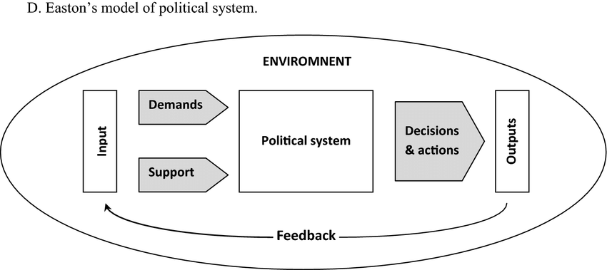
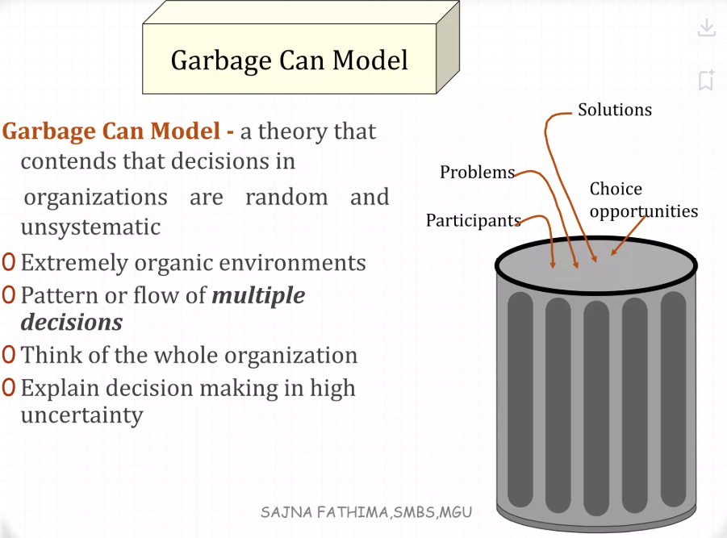
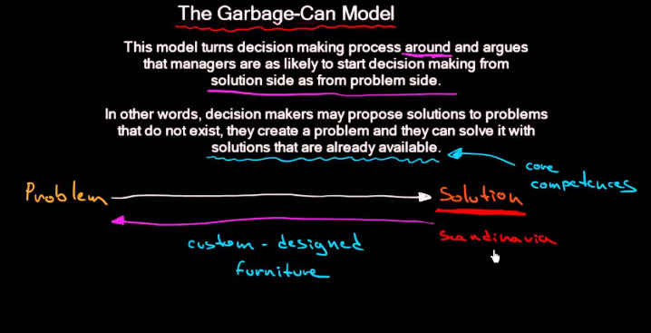

flowchart LR
A[Identification du problème] --> B[Développement du programme]
B --> C[Mise en oeuvre du programme]
C --> D[Évaluation du programme]
D --> E[Terminaison du programme]
Sociologie
Olivier Caron ![]()
Intervenants
Johanna Siméant-Germanos & Aliénor Balaudé-André ENS / DSS
Administrer, gérer, décider ?
Politiques publiques, savoirs et pratiques de l’Etat
Aliénor Balaudé-André => enquête sur les effets des politiques de site (grappes, clusters) sur les logiques d’action des institutions.
Etudie la politique d’excellence en Allemagne, de solutions
Qu’est-ce qu’une politique publique ?
Un problème de définition ?
Les 5 composantes de Mény et Thoenig (1989) :
Un enemble de mesures concrètes
Un programme et un cadré général d’action
Une orientation normative
Coercitive
Les politiques publiques selon Howlett et Ramesh (1995) :
- “Un ensemble de décisions reliées entre elles, pris par un acteur ou un groupe d’acteurs, avec pour caractéristique fondamentale de définir les buts à atteindre ainsi que les moyens nécessaires pour remplir les objectifs fixés”
Une définition simpliste, symptomatique d’une entreprise délicate (Dye, 1972) :
“Whatever governments choose to do or not do”
Dépasser les approches séquentielle, systémique et sectorielle
Le politiques publiques comme successsions de séquences ?
De Lasswell (1956) à Jones (1970) et son modèle en 5 étapes
Un système politique traduisant les demandes sociales en politiques publiques ? (Easton, 1953 et 1965)
Une approche systémique fortement critiquée
Mais une invitation à ouvrir cette “boîte noire” : l’analyse des politiques publiques comme chaînon manquant

David Easton, dans son modèle du système politique (1953, 1965), propose une analyse systémique des politiques publiques qui transforme les demandes et soutiens sociaux en décisions et actions politiques. Le graphique illustre cette dynamique en plaçant le système politique dans son environnement, où les inputs (demandes et soutiens) émergent en réponse aux problématiques sociales. Ces inputs sont traités par le système politique, produisant des outputs sous forme de décisions et actions, lesquelles génèrent un feedback retournant vers l’environnement pour influencer les cycles futurs. Si ce modèle a été critiqué pour sa vision simplifiée et décontextualisée des processus complexes, il incite néanmoins à examiner en profondeur cette « boîte noire » que constitue le système politique. En ce sens, il pave la voie à des approches plus détaillées, comme celle de Harold Lasswell (1956) et Charles Jones (1970), qui décrivent les politiques publiques comme une succession de séquences structurées – de l’identification des problèmes à leur résolution finale – et ouvrent une perspective intégrée sur les relations entre acteurs, institutions et processus.
Remettre la décision à sa place
- Ne pas surestimer le poids et les effets des décisions dans les politiques publiques.
Gouverner, ce n’est pas uniquement décider.
Nécessité de comprendre ce qui contribue à l’acceptabilité des décisions.
Se départir d’une approche uniquement top-down.
Analyser les conditions de possibilité d’une décision.
Une fabrication des politiques publiques surpeuplée
Une fabrication des politiques publiques surpeuplée (“Overcrowded Policymaking”, Richardson et Jordan, 1983)
Si on essaie de faire des changement dans les politiues publiues, il peut y avoir une intervention de gens dans la fonction publique (exemple des énarques qui étaient contre le 3ème concours)
Articuler politics et policies sans négliger leur autonomie
Citations de Bourdieu
Thatcher : policy d’accès à la propriété car on sait que les gens propriétaires ont tendance à être de droite
| Politics | Policy | Polity |
|---|---|---|
formation; aggregation; r e p resentation: i n termediation
discourse
electoral politics
c onsternation |
approaches |
institutions
relations
structures
a d ministration
traditions
institutons |
La double nature des politiques publiuqes
Les politiques publiuqes, une double nature, symbolique et pratique
Pratique : elles sont matérialisées par des instruments, dispositifs, normes… et produisent (souvent) des effets tangibles sur le monde social
Symbolique : elles reflètent et incorporent des conceptions du politique et travaillent les représentations
Sarkozy très virulent verbalement mais pas vraiment suivi de l’action autant qu’il le disait. A l’inverse, Macron parlait assez peu et pas grandement de politique d’expulsion, mais sa politique est beaucoup plus virulente
D2finir les prolbèmes : quand une situation ne devient pas toujours un problème public
A. Définition de agendas (“agenda building”) et mise sur agenda (“agenda setting”)
Qu’est-ce qu’un agenda politique ?
- Padioleau : “l’ensemble des problème perçus comme appelant un débat public, voire l’intervention des autorités politiques légitimes”
- Kingdon : “la liste des sujets et problèmes auxquels les responsable gouvernementaux, et les personnes hors du gouvernement, mais qui y sont étroitement associées, accordent de l’attention à un moment dans le temps” (1984)
A. Définition des agendas (agenda building) et mise sur agenda (“agenda setting”)
La problématisation comme condition de possibilité de l’agenda building
Un passage obligé : la conversion de difficultés d’ordre privé ou de malaises vécus en silence (private troubles) en problème publics (public issues)” (Cefaï, 1996)
Un processus rarement immédiat, jamais systématique
Agenda setting
L’agenda setting se réfère à une approche où l’orientation des priorités politiques est déterminée par les élites dirigeantes, qu’il s’agisse des décideurs politiques, des institutions gouvernementales ou des acteurs influents situés au sommet de la hiérarchie du pouvoir. Dans ce cadre, les sujets sont sélectionnés et hiérarchisés selon les objectifs des autorités, qui influencent ensuite la manière dont ils seront perçus et débattus dans la société. Cette approche met l’accent sur la capacité des détenteurs du pouvoir à orienter l’attention publique vers certains problèmes, tout en reléguant d’autres questions à l’arrière-plan. Elle soulève toutefois des critiques, notamment en raison du risque de marginalisation des préoccupations des groupes sociaux éloignés des sphères décisionnelles.
Agenda building
L’agenda building, en revanche, met en lumière un processus plus participatif et inclusif. Dans cette approche, l’élaboration de l’agenda politique ne se limite pas aux décisions unilatérales des dirigeants, mais résulte d’une interaction entre divers acteurs : institutions, groupes d’intérêts, médias, et même citoyens. Ces acteurs contribuent à structurer et à influencer l’émergence de certaines idées ou problématiques dans l’opinion publique. Par exemple, les mouvements sociaux ou les campagnes médiatiques peuvent catalyser l’attention publique sur des sujets spécifiques, exerçant ainsi une pression sur les autorités pour qu’elles les intègrent dans leurs priorités. Ce processus met en évidence le rôle central de la société civile et des mécanismes de mobilisation collective dans la définition des enjeux politiques. Il illustre une dynamique ascendante, où les priorités peuvent être façonnées par des forces extérieures aux cercles du pouvoir.
Pour mettre quelque chose à l’agenda, il faut pouvoir profiter d’une crise par exemple “la théorie du choc” de Naomi Klein
LIVRE Les gardiens de la raison: Enquête sur la désinformation scientifique
Le rôle des médias, les limites du médiacentrisme
Des médias cruciaux - Cobb et Elder, 1971
Les multiples limites du médiacentrisme
Le poids relatif des gouvernements dans la définition de l’agenda
N’importe quel gouvernement autoritaire essaie de s’attirer la légitimité (voir thèse de doctorat sur les politiques du logement en Allemagne de l’Est)
L’agenda médiatique n’est pas l’agenda politque, quan bien même les deux se nourissent
Social listening
L’exemple de l’amiante (Henry, 2007)
Une longue période durant laquelle l’amiante n’est pas un problème public, malgré de premières mobilisations dans les années 1970
Une situation qui perdure jusqu’au milieu des années 1990 - plainte, dénoncitation du CPA (comité permannent Amiante) et création de l’Andeva.
Médisation et changement de propriété : l’amiante, tardivement, devient un problème.
Livre : Amiante, un Scandale improbable : sociologie d’un problème public
La théore kingdonienne de l’agenda setting (1984)
Une mise sur agenda dépendant de la conjonction de 3 courants :
Le courant des problèmes
Le courant des opinions de politiques publiques
Le courant politique
Des entrepreneurs
B) GRoupes d’intérêt et politiques publiques
Acteurs (ONG, association, etc.) qui vont jouer un rôle dans la formation des politiques publiques
Groupes d’intérêt = mot dénué de connotation en sciences politiques (lobbys etc.)
3 modèles d’analyse (Wilson, 1983)
Le modèle protestataire : met en lumière les groupes qui opèrent en dehors des cadres institutionnels habituels et qui n’ont pas de contacts réguliers, formalisés ou apaisés avec les autorités politiques. Ces acteurs recourent souvent à des stratégies d’opposition ou de contestation pour attirer l’attention sur leurs causes. Ils organisent des manifestations, des pétitions, des campagnes médiatiques, ou encore des actions symboliques pour susciter une mobilisation publique et influencer indirectement les décisions politiques.
Ce modèle illustre notamment les mouvements sociaux émergents ou les groupes marginalisés qui ne disposent pas d’un accès direct au processus décisionnel. Par exemple, les collectifs environnementaux radicaux ou les associations de défense des minorités peuvent s’inscrire dans ce cadre lorsqu’ils ne sont pas inclus dans les négociations institutionnelles.
Le modèle pluraliste : les groupes d’intérêt sont vus comme des acteurs compétitifs et autonomes qui cherchent à influencer les politiques publiques en s’insérant dans des arènes ouvertes. Les décisions politiques résultent ici de la concurrence entre plusieurs groupes, chacun cherchant à faire valoir ses idées et ses revendications. L’État joue un rôle d’arbitre en régulant les interactions entre les différents acteurs.
Ce modèle repose sur l’idée que les politiques publiques émergent d’un équilibre entre les intérêts contradictoires et que le processus démocratique garantit une certaine équité dans l’accès au pouvoir. Il reflète un système relativement ouvert où aucun groupe ne monopolise l’influence. Les lobbies économiques, syndicaux ou associations professionnelles peuvent être les principaux acteurs dans ce cadre.
Le modèle néo-corporatiste (Philippe C. Schmitter) : repose sur une coopération institutionnalisée entre l’État et certains groupes d’intérêt “reconnus”, souvent dans des domaines bien définis. Ces groupes bénéficient d’un accès privilégié au processus de décision, ce qui leur permet de négocier directement avec les autorités. Les syndicats, les organisations patronales ou encore les grandes fédérations professionnelles en sont des exemples typiques.
Dans ce modèle, l’État ne joue plus seulement le rôle d’arbitre, mais devient un partenaire actif, intégrant certains groupes dans l’élaboration et la mise en œuvre des politiques publiques. Ce cadre reflète une hiérarchie où certains groupes, jugés représentatifs ou stratégiques, exercent une influence prédominante, souvent au détriment des acteurs moins institutionnalisés.
=> Un mode global de régulation social assuré par l’interaction de
Astroturfing : Une manipulation de la participation citoyenne
En marge de ces modèles, il est important de parler de l’astroturfing, une pratique controversée dans laquelle des entreprises ou des groupes d’intérêt organisent des campagnes qui imitent des mouvements citoyens ou des initiatives de base. Le terme “astroturfing” fait référence au gazon synthétique (“AstroTurf”) pour symboliser le caractère artificiel de ces actions.
Ces campagnes cherchent à donner l’impression qu’un mouvement populaire spontané soutient une cause ou une politique particulière, alors qu’elles sont en réalité orchestrées en coulisses par des acteurs puissants (entreprises, lobbyistes, etc.). L’objectif est de manipuler l’opinion publique ou d’influencer les décideurs politiques en créant une illusion de soutien citoyen.
L’astroturfing pose des questions éthiques majeures et menace la transparence dans la prise de décision publique. En effet, il détourne le processus démocratique en créant des distorsions dans l’expression des priorités citoyennes. Cela montre que l’analyse des groupes d’intérêt ne peut pas ignorer les stratégies délibérées de manipulation et les asymétries de pouvoir dans les arènes politiques.
Définition, illustration et limites de la notion de référentiel
Deux exemples :
La politique de défense nationale, dépendante de la perception du risque et du rôle assigné à l’armée dans la nation
La politique industrielle, dépendante des représentation du rôle de l’industrie :
Moyen de lutte contre le chômage => tentative de sauvetage d’un maximum d’emplois
Outil de compétitivité extérieure => encouragement des restructurations malgré leur coût social
Une profonde remise en cause des théories de la rationalité
Simon, 1947 : une rationalité procédurale, subjective, intuitive relative et dès lors limitée (bounded)
Lindblom, 1959 et 1979 : de la “science du bricolage” à l’incrémentalisme (The Science of Manmadehood)
Une critique de la méthode rationnelle-globale (root method)…
… et une proposition alternative, la méthode par comparaisons successives limitées (branch method)
Le processus décisionnaire est donc fondamentalement incrémental, pas fait sur la théorie.
Des solutions en quête de problèmes : le modèle de la “poubelle”
Un article séminal : “A garbage can model of organizational choice” (Cohen, March et Olesen, 1972)
Des anarchies organisées.. dans lequelles la décision n’a rien de rationnel et les solutions, rien de problem-solving
Des politiques piochées dans cette “poubelle” : résultats imprévisibles du croisement de ces flux de problèmes et de solutions
Source : Clark-Stallkamp Stefaniak J “Inside the Garbage Can: Theory of Organizational Anarchy and Considerations for Instructional Designers”
Discours du président Truman qui parle de sous-développement qui est ajouté par un conseiller à la fin


Crise des missiles de Cuba (1962) - chronologie
Le livre Essence of Decision d’Allison et Zelikow est mentionné dans ce contexte car il offre une analyse approfondie des processus décisionnels en situation de crise, notamment à travers l’exemple de la crise des missiles de Cuba en 1962. Ce livre s’inscrit dans le débat sur la remise en cause des théories traditionnelles de la rationalité en proposant trois paradigmes d’analyse des décisions : la politique rationnelle, la politique organisationnelle et la politique bureaucratique. Ces modèles enrichissent la compréhension des décisions en illustrant comment elles sont influencées par des dynamiques complexes, loin de la vision idéale de la rationalité globale. Dans le cadre des discussions mentionnées dans le passage, Essence of Decision vient renforcer l’idée que la prise de décision n’est pas toujours un processus rationnel et linéaire. En effet, comme le suggère le “garbage can model” de Cohen, March et Olsen, les décisions peuvent être imprévisibles, issues d’un mélange désordonné de problèmes, de solutions et de participants. Le livre met en lumière des luttes bureaucratiques (paradigme de la politique bureaucratique) et des limitations organisationnelles (paradigme de la politique organisationnelle), montrant que les décisions sont souvent le résultat de compromis et d’influences institutionnelles plutôt que d’un calcul rationnel optimal. Ainsi, Essence of Decision s’intègre parfaitement dans cette critique des théories de la rationalité classique, en soulignant l’importance des contraintes, des dynamiques politiques et des comportements organisationnels dans le processus décisionnel. Il illustre comment les décisions complexes, comme celles de la crise des missiles de Cuba, défient les approches simplistes basées sur une rationalité purement logique.
16 au 22 otobre 1962 ; crise couverte
Deux modèles d’analyse de la décisions !
Des modèles explicatifs concurrents
Paradigme de la politique rationnelle
Paradigme de la politique organisationnelle
Paradigme de la politique bureaucratique (luttes bureaucratiques)
On observe des frictions entre le CIA et le Pentagone : prioriétés divergentes. Chacun raisonne du point de vue de son organisation, c’est pareil avec le Ministère des affaires étrangères et l’armée pendant le conflit au Mali. L’armée de terre avait tout intérêt à être déployée là-bas car en train de négocier pour son budget de fonctionnement.
“where you stand depends on where you sit” => La vision d’une situation est façonnée par la relation personnelle que l’on entretient avec elle. Cette phrase est parfois appelée « loi de Miles », car elle est attribuée à Rufus Miles, un fonctionnaire du gouvernement américain au début du 20e siècle.
Maurice Duverger =>
L’important c’est de prêter attention aux luttes internes, il y a du marchandage interne par exemple dans la fonction publique.
Partie 2 - Haut fonctionnaires, élites et pensée d’Etat
“Lieux neutres”, expertise, bureaucratie et savoirs de gouvernement
Saisir de quoi est fait l’Etat : recrutements et savoir de gouvernement
La question spécifique de la haute fonction publique (distinguer fonctionnaires, grands corps, hauts fonctonnaires…)
Elites et dynamiques de la domination : articuler circulation & transformation des élites et changement social et politique (N. Elias et la noblesse de robe, C. Charle…), penser le champ du pouvoir.
Petit aparté sur des cours que les sociologues profs ont eus par rapport aux biais dans le recrutement. Et ça la fait bien rire parce que ça fait longtemp que les sociologues étaient au courant de tout ça : mais les sciences cognitives, avecleur “scientificité” ont l’air de mieux faire accepter ce genre de résultats.
Autre aparté sur le nombre de normaliens morts pendant la guerre 14-18 => parce qu’il y a des luttes internes entre les X et normaliens. Les X accèdent au pouvoir plus facilement car déjà dans l’armée, les normaliens veulent aussi augmenter et donc s’enrolent mais ils sont mis sur des postes largement plus exposés que les X parce que les X ont déjà de l’expérience militaire donc des postes de commandement et à la DGA, ce genre de choses.
L’idéal-type de la domination légale-rationnelle
Généralisation, avec l’avènement des Etats modernes, de la domination légale rationnelle - une domination intrinsèquement bureaucratique
Un idéal-typ fondé sur l’obéissance à la règle, jamais sous sa “forme pure” mais permettant de souligner des caractéristiques
A. La direction administrative bureaucratique : modèle et réalité
L’idéal-type de la domination légale-rationnelle dans les Etats contemporains
des varations nationales parfois très distances de ce modèle (Eymero)
La bureaucratie est une force sociale comme les autres. Comme n’importe quel groupe social, elle a des intérêts propres et légitimes en soi. Il y a très souvent dans un groupe social une façon de penser le lien entre ses propres intérêts et l’intérêt général.
B. Grands corps, “noblesse d’Etat” (expression de Pierre Bourdieu)
LIVRE : BERSTEIN Serge, BIRNBAUM Pierre, RIOUX Jean-Pierre et KESSLER Marie-Christine : “L’impératif des grands corps” dans Serge BERSTEIN
LIVRE : La fabrique des Enarques par Eymeri Jean-Michel
C’est une notion particulièrement Française.
Ministère de l’équipement pour le Corps des Ponts et Chaussées.
Corps des Mines pareil pour un autre
Photo prise sur mon portable : Faire Polytechnique pour ne surtout aps devenir officier. Source Les métamorphoses d’une noblesse d’Etat : reconversion et internationalisation des polytechniciens
Natacha Gally fait un travail de recherche sur la formation, la mobilité, l’extension du pouvoir des Grands Corps, ce qui explique que les Grands Corps ont encore de l’avenir et sont encore beaucoup choisis, et que certains soient plus choisis que d’autres
https://esprit.presse.fr/article/natacha-gally/le-marche-des-hauts-fonctionnaires-de-l-ena-a-l-insp-44064
La formation des HF en France et la Fabrique des énarques (Eymeri, 2001)
Une sociologie de tous les énarques, pas seulement ceux rejoignant les grands corps
Les logiques paradoxales de l’ambition des candidats, nourries par une méconniassance des carrières
Une scolarité à l’ENA entre différenciation et (con)formation
Une conformation sans uniformisation : l’ENA différencie aussi, via le classement (son anticipation, puis son caractère effectif) et les modalités de la socialisation secondaire.
- Démocratisation de la haute fonction publique produit l’effet inverse de diversifier : elle uniformise par assimiliation réciproque et cooptation des élites.
- Démocratisation de la haute fonction publique produit l’effet inverse de diversifier : elle uniformise par assimiliation réciproque et cooptation des élites.
C. Ecole d’élite, pensée d’élite, pensées d’Etat
Apprendre à se conformer : la socialisation à l’Etat
La production de l’idéologie dominante et les “lieux neutres” : lieux où les élites du pouvoir se “mettent d’accord” pour poser la norme du moment. Ils stabilisent leurs compromis sur ce que va être la nouvelle Doxa du moment
LIVRE : La gauche américaine en France de Mathieu Hauchecorne
“Injonction au big” par rapport sur la fusion des universités pour avoir une grosse structure.
D. Les hauts fonctionnaires, entre technique et politique
à la jonction du politique et de l’administratif
Techniciser, politiser, bloquer
Circuler entre administration, économie et politique : le pantouflage et les “belles carrières”
Les HF et la politique : des relations équivoques
La politisation de certaines nominations et son influence sur les carrières au sein de la HFP, un élement commun à plusieurs pays d’Europe (PAge & Wright, 1999) et du monde, malgré le principe de neutralité politique :
Etats-Unis : cas le plu amrquant avec le spoil system
France : une forme nettement plus légère de spoil system à partir des années 1970 = beaucoup moins de renouvellements, et une redistribution des postes cantonnée à la HFP
Allemagne : des pratiques
Les cabinets ministériel, une forme administrative intéressante à observer pour comprendre les liens entre HFP et politique
Absents en GB, malgré la pratique désormais courant des ministres de s’entourer de conseillers politiques
En France, une importance croissance depuis 1958 : des membre de cabinets recrutés largement dans la FP (jusqu’en 1981) puis également dans les milieu associatiofs, syndicaux et partisants. Des accélérateurs de carrières pour les fontionnaires, souvent assortis de “récompenses”
En Allemagne : une longue tradition de cabinets
Conseil de lecture LIVRE : Sociographie des cabinets minitériels (dir. T. Collas, D. Dulong et F. Sawicki), RFAP, 2018
La nouvelle mission des hauts fonctionnaires : techniciser, politiser, bloquer
Il s’agit d’arriver à trouver le langage acceptable par son minitre, déjà codé, d’une façon très proche de ce que serait aussi la façon d’écrire des textes très judicaires et à borner les choix de son ministre.
FRANCE Pierre : Sphère publique, intérêts privés, enquête sur un grand brouillage, Paris
Presses de Sciences Po 2017
LE pantouflage
Allers-retours (revolving doors) depuis 1990 en France entre les hauts fonctionnaires et le privé.
E. Crise de l’Etat ou reconfiguration par les élites qui l’investissent, autrement ?
“Le fonctionnaire détrôné”
Crise de l’Etat providence et du servide de l’Etat
Managérialisation, consultance et revolving doors dans la “réforme” de l’Etat
Pourquoi faire mine de croire au service pubic si l’on peut transformer l’Etat autrement, voire partir d’autres écoles que celles qui formaient les hauts fonctionnaires
Sphères publics/privées de plus en plus poreuses.
Françoise Dreyfus : grande spécialiste de la haute administration
Plus en plus d’utilisation du “benchmarking” de façon décontextualisée. Effet de managérialisation / consultance dans le service de l’Etat.
Si on se penche sur les travaux de Julie Gervais : travail sur la transformation du Corps des Ponts et Chaussées. Pas de rejet fondamental par le corps des ponts du grand management => possibilité de redorer leur blason qui était en perte de vitesse.
LIVRE : L’impératif managérial
Les “appels à projet” ont participé du recours (par exemple à l’université) à des cabinets de conseil spécialisés là-dedans, pour espérer obtenir des millions d’euros à investir dans la recherche. Ces appels à projets ont induit une logique concurentielle entre les différents écoles/universités.
=> “Si les autres le font, moi aussi je dois le faire” par la logique du “on se force à faire le meilleur” quand on est dans une logique de compétition.
Il y a aussi l’idée de la traduction de l’ethos académique en language bureaucratique compréhensible, les jolis slides etc. y compris toute la logique managériale de “proposals” , de diagrammes de Gantt.
Tout ceci est explicité dans l’idée de “cité par projets” de Boltanski. Ca existe aussi à aller cherche de l’argent dans des projets européens, mais tout ceci nécessite des temps pleins et un temps très important, une formation spécifique au “registre” de ces appels à projets.
Il se pourrait qu’il y ait une forme de fléchissement de tous ces appels à projets ca ils nuiraient au temps de charge, à voir de si ce discours arrive à pénéter les différents stades d’organisation dans le futur.
Comment changent les référentiels
Changements de référentiel sectorail et de référentiel global
Des changements de réfétneil global aux cycles d’action publique
un tournant néolibéral (jobert, 1994)
Le poids des grands corps de l’Etat dans les référentiels de l’action publique